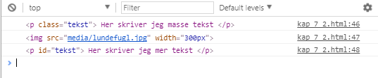
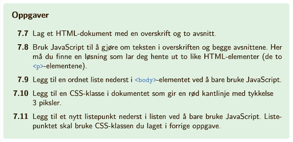
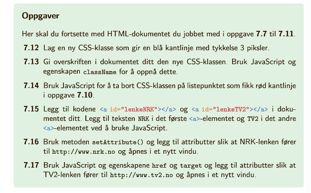

Fra 7.2 husker vi at vi henter inn html-elementer og lagrer dem i variabler ved metoden document.querySelector(id, klasse eller element):
< script >
var tekstKlasseEl = document.querySelector('.tekst');
var bildeEl = document.querySelector('img');
var tekstIdEl = document.querySelector('#tekst');
< /script >
Vi får lite informasjon av å skrive disse variablene til nettsiden. Dersom vi vil se hva som faktisk er lagret i variablen, må den skrives til konsollen.
Dersom vi lagrer et tekstelement som en variabel, vil denne inneholde hele elementet:

Selve tekstinnholdet finner vi ved å be om innerHTML. For å skrive ut denne bruker vi det vi kaller dot-notasjon:
< p id="tekst"> Her skriver jeg tekst < /p>
< script>
var tekstEl = document.querySelector("#tekst");
var tekstElInnhold = tekstEl.innerHTML;
document.write(tekstElInnhold);
< /script>
Her skriver jeg tekst
Når vi kan lese ut tekstinnholdet, kan vi også endre det. La oss for eksempel endre innholdet i teksten over til 'teksten ble endret':
< p id="tekst2" > Her skriver jeg tekst < /p >
< script>
var tekst2El = document.querySelector("#tekst2");
tekst2El.innerHTML = 'teksten ble endret';
document.write(tekst2El.innerHTML);
< /script>
Her skriver jeg tekst
Vi kan også endre på andre elementer enn < p >-elementer. For eksempel kan hele body (synlig innhold på nettsiden) overskrives:
< script >
var bodyEl = document.querySelector('body');
bodyEl.innerHTML = 'ERROR';
< /script >
Å endre på body kan vi benytte oss av når vi vil legge til nye elementer på nettsiden. Legg merke til at alt innhold som skal legges til først lagres i en variabel:
< script >
var bodyEl = document.querySelector("body");
var liste='';
liste+='< ol >';
liste+='< li > Listepunkt 1 < /li >';
liste+='< li > Listepunkt 2 < /li >';
liste+='< /ol >';
bodyEl.innerHTML += liste;
< /script>
Når vi legger til elementer med attributter bruker vi samme metode. Når vi legger til attributter, angir vi verdien i fnutter: class="tekst" eller class='tekst'. Når vi gjør dette i kombinasjon med tekstEl.innerHTML="ny tekst" eller tekstEl.innerHTML='ny tekst' må vi være oppmerksomme på bruk av fnutter:
tekstEl.innerHTML = '< p class='tekst' > gir problemer fordi vi bruker ' ' rundt både tekst og attributtverdi < /p >'
tekstEl.innerHTML = '< p class="tekst" > går fint fordi vi skiller mellom ' ' og " " < /p >'
tekstEl.innerHTML = "< p class="tekst" > gir problemer fordi vi bruker " " rundt både tekst og attributtverdi < /p >"
tekstEl.innerHTML = "< p class='tekst' > går fint fordi vi skiller mellom " "" og ' '' < /p >"
s. 115: Oppgave 7.7, 7.8, 7.9, 7.10, 7.11
| Metode | Forklaring |
|---|---|
| document.querySelector("p") | Henter ut elementer av typen p |
| document.querySelector("#tekst") | Henter ut elementer med iden tekst |
| document.querySelector(".tekst") | Henter ut elementer med klassen tekst |
| variabel.innerHTML="ny verdi" | Gir variablen et nytt innhold (overskriver) |
| variabel.innerHTML += "mer innhold" | Legger til innhold i variabelen |
Opprett et tomt html-dokument. Bruk JavaScript til å hente inn body-elementet. I dette elementet skal du legge inn to tekstelementer
Det tomme html-dokumentet ser da slik ut:
< !DOCTYPE html >
< html >
< head >
< meta charset="utf-8" >
< title >eksempel < /title >
< /head >
< body >
< /body >
< /html >
I body legges følgende script inn:
< script >
var bodyEl = document.querySelector('body');
var tekst1El = "< p > Det første tekstelementet < /p >";
bodyEl.innerHTML += tekst1El;
var tekst2El = "< p > Det andre tekstelementet < /p >";
bodyEl.innerHTML += tekst2El;
< /script >
Metoden innerHTML bruker vi til å legge til innhold i elementene. På samme måte kan vi legge til attrributter (f.eks. klasser, ider, bredder, kilder osv) ved å bruke metoden setAttribute("attributt", "verdi"). Som eksempel kan jeg gi dette p-elementet, med klassen attributter, rød skrift:
< script >
var attributtEl = document.querySelector(".attributter");
attributtEl.setAttribute("class", "rod");
< /script >
På samme måte kan vi fjerne attributter ved bruk av metoden removeAttribute("attributt"):
< script >
attributtEl.removeAttribute("class");
< /script >
I forrige eksempel: Legg til internal stylesheet med stilsettingen
< style >
.stor{
font-size: 200%;
font-weight: bold;
}
#gronn{
background-color: lightgreen;
}
< /style >
Gi hele nettsiden (body) klassen stor og iden gronn.
I scriptet legges følgende kode til:
bodyEl.setAttribute("class", "stor");
bodyEl.setAttribute("id", "gronn");
I kapittel 6 holdt vi oss til å bruke internal eller external stilsetting, da inline blir veldig rotete. Et eksempel på inline css er
< p style="color: blue;"> Blå tekst < /p >
Vi skal fortsatt ikke bruke inline-metoden i ren html-kode, men metoden gir oss en ny dot-notasjon i JavaScript:
variabel.style.egenskap = "verdi";
for eksempel
attributtEl.style.backgroundColor="lightblue";
Legg merke til at det skrives backgroundColor og ikke background-color som i css. På samme måte vil vi skrive marginTop, fontSize osv.
| Metode | Forklaring |
|---|---|
| document.querySelector("p") | Henter ut elementer av typen p |
| document.querySelector("#tekst") | Henter ut elementer med iden tekst |
| document.querySelector(".tekst") | Henter ut elementer med klassen tekst |
| variabel.innerHTML="ny verdi" | Gir variablen et nytt innhold (overskriver) |
| variabel.innerHTML += "mer innhold" | Legger til innhold i variabelen |
| variabel.setAttribute("type attributt", "verdi") | Legger til nytt attributt, f.eks. en klasse (verdien er da klassenavnet) |
| variabel.removeAttribute("type attributt") | Fjerner et attributt, f.eks. en klasse, fra variabelen |
| variabel.style.egenskap="ny verdi" | Endrer en enkelt css-egenskap uten bruk av klasser/ider |
s. 118: Oppgave 7.12, 7.13, 7.14, 7.15, 7.16, 7.17
